Introducción
Introducción
Las organizaciones enfrentan constantemente situaciones que requieren establecer objetivos, tomar decisiones, resolver problemas y adaptarse a los cambios.
Para responder a estas necesidades, se han desarrollado diferentes teorías administrativas que permiten comprender cómo funcionan las organizaciones y cómo pueden mejorar sus resultados.
En esta unidad conoceremos las principales teorías de la administración relacionadas con el cumplimiento de objetivos, la toma de decisiones, el desarrollo organizacional, la adaptación a diferentes circunstancias y la mejora continua.
Su estudio permitirá comprender que no existe una única manera de administrar, ya que las decisiones y estrategias deben responder a las características y necesidades de cada organización.
Objetivo de la unidad
Objetivo de la unidad
Comprender las principales teorías de la administración, identificando sus características, aportaciones y aplicaciones en las organizaciones, para reconocer su importancia en el establecimiento de objetivos, la toma de decisiones, el desarrollo organizacional y la mejora continua.
¿Qué aprenderá el alumno?
Al finalizar esta unidad, el estudiante será capaz de:
- Administración por objetivos: Comprender cómo se establecen metas y se evalúan los resultados dentro de una organización.
- Teorías de la decisión: Reconocer la importancia de analizar información y alternativas antes de tomar decisiones.
- Teorías del desarrollo organizacional: Identificar cómo las organizaciones pueden implementar cambios para mejorar su funcionamiento.
- Teoría de la contingencia: Comprender por qué las decisiones administrativas deben adaptarse a las circunstancias de cada organización.
- Método Deming: Conocer la importancia de la calidad y la mejora continua en los procesos administrativos.
- Teoría organizacional: Analizar cómo se relacionan la estructura, las personas y los procesos dentro de una organización.
Texto
Temario de la Unidad 3
3. Principales teorías de la administración
3.1 Administración por objetivos
3.2 Teorías de la decisión
3.3 Teorías del desarrollo organizacional
3.4 Teoría de la contingencia
3.5 Método Deming
3.6 Teoría organizacional
Las teorías administrativas proporcionan diferentes herramientas para comprender y mejorar el funcionamiento de las organizaciones.
Administrar implica establecer objetivos, tomar decisiones, adaptarse a los cambios y buscar constantemente mejores resultados.
3.1. Administración por objetivos
3.1. Administración por objetivos
¿Qué es la administración por objetivos?
La Administración por Objetivos (APO) es un enfoque administrativo que consiste en establecer metas claras y evaluar los resultados obtenidos.
Su propósito es que todas las personas que integran una organización conozcan qué deben lograr y cómo contribuir al cumplimiento de los objetivos.
Por ejemplo, en lugar de decir “debemos mejorar las ventas”, se establece un objetivo específico: “incrementar las ventas un 10 % durante los próximos seis meses”.
Principal representante
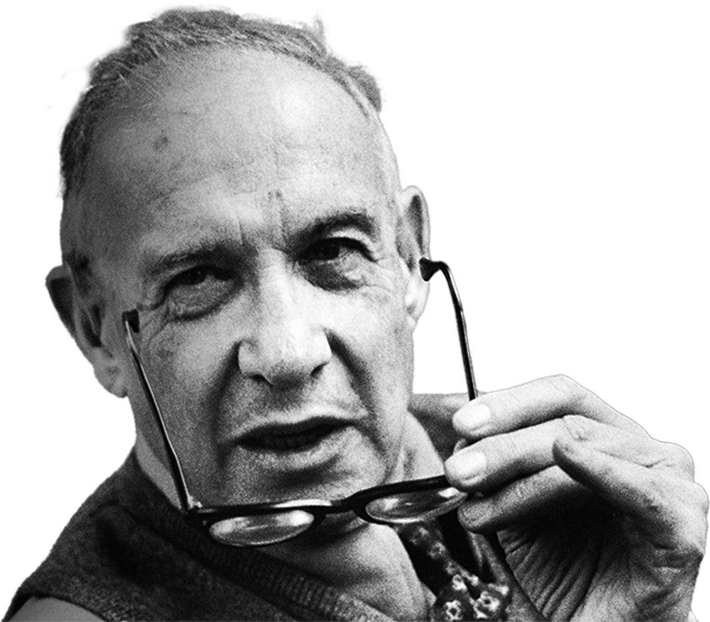
Peter F. Drucker (1909–2005)
Fue uno de los principales impulsores de la Administración por Objetivos. En su obra The Practice of Management (1954), destacó la importancia de establecer objetivos y orientar el trabajo hacia resultados.
Características principales
- Objetivos claros: se define lo que se desea alcanzar.
- Participación: los responsables colaboran en el establecimiento de metas.
- Responsabilidades definidas: cada persona conoce sus actividades.
- Seguimiento: se revisan periódicamente los avances.
- Evaluación: se comparan los resultados obtenidos con los objetivos establecidos.
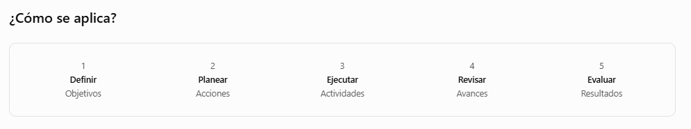
Ejemplo práctico
Una empresa de entregas identifica que tarda aproximadamente 7 días en entregar los pedidos.
Su objetivo es reducir ese tiempo a 4 días durante los próximos tres meses.
Para lograrlo, reorganiza las rutas, asigna responsabilidades y revisa semanalmente los tiempos de entrega.
Al finalizar los tres meses, compara los resultados con la meta establecida para determinar si cumplió el objetivo.
La Administración por Objetivos permite transformar las intenciones en metas concretas, organizar el trabajo y evaluar los resultados.
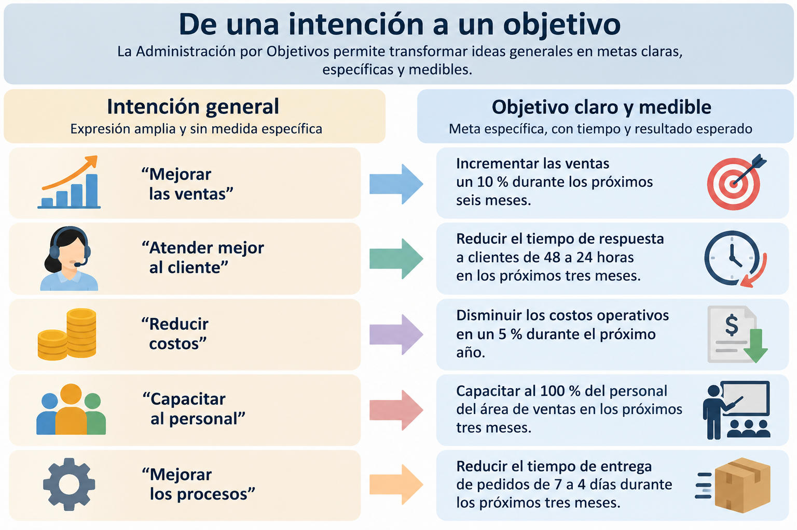
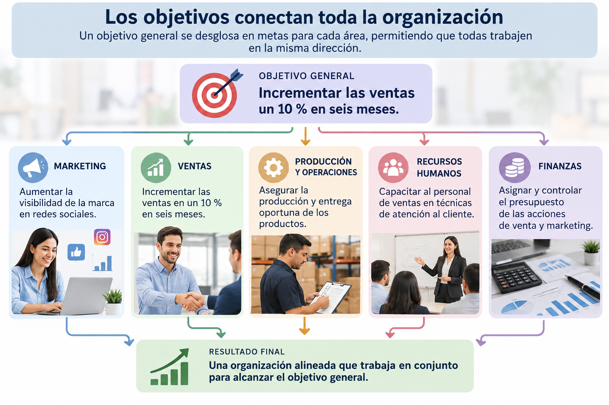
3.2. Teorías de la decisión
3.2. Teorías de la decisión
¿Qué son las teorías de la decisión?
Las teorías de la decisión estudian cómo las personas y los administradores eligen entre diferentes alternativas para resolver problemas y alcanzar los objetivos de una organización.
En una empresa, constantemente se toman decisiones relacionadas con la contratación de personal, la compra de materiales, los precios, la producción y la distribución de recursos.
Por ello, tomar decisiones no significa simplemente elegir una opción, sino analizar la información disponible y considerar sus posibles consecuencias.
Principal representante
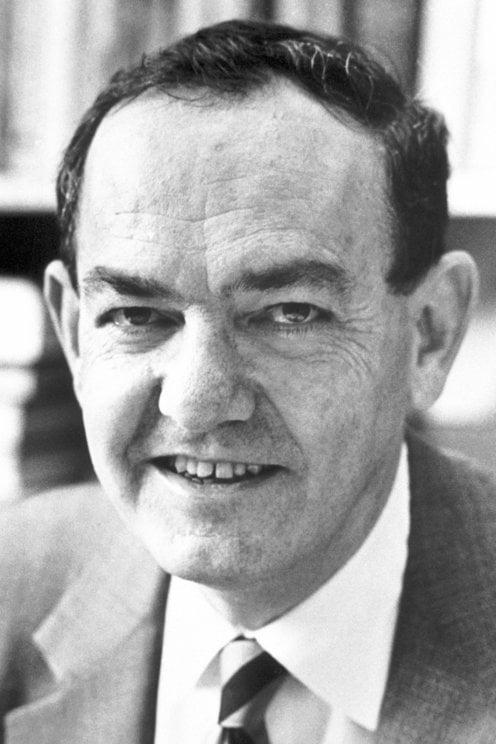
Herbert A. Simon (1916–2001)
Fue uno de los principales representantes del estudio de la toma de decisiones en las organizaciones.
Desarrolló el concepto de racionalidad limitada, que explica que las personas toman decisiones con información, tiempo y recursos limitados.
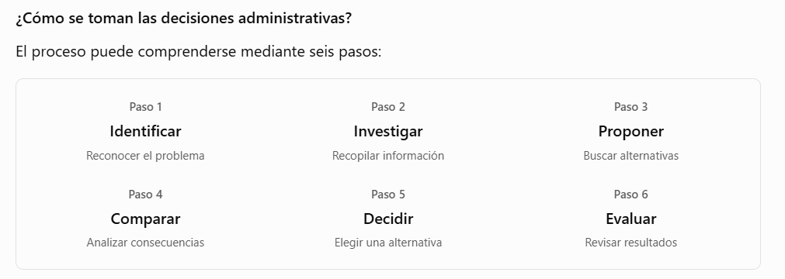
¿Qué es la racionalidad limitada?
Herbert Simon explicó que los administradores no siempre cuentan con toda la información necesaria para tomar una decisión perfecta.
Por ejemplo, pueden enfrentar:
- Información incompleta.
- Tiempo limitado para decidir.
- Recursos económicos insuficientes.
- Incertidumbre sobre los resultados.
Por esta razón, muchas veces se elige una alternativa satisfactoria y viable, aunque no necesariamente sea la mejor de todas las posibles.
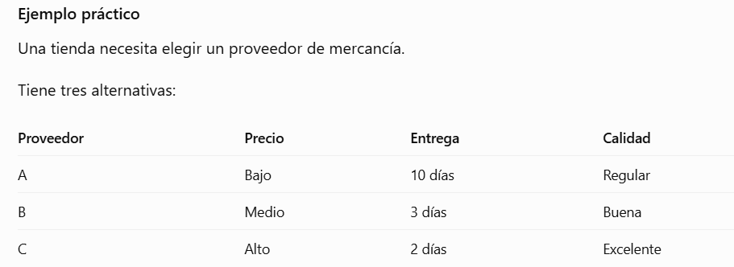
El administrador debe analizar qué necesita realmente la empresa.
Si requiere mercancía rápidamente, pero tiene un presupuesto limitado, podría seleccionar al proveedor B, porque ofrece un equilibrio entre precio, tiempo de entrega y calidad.
La decisión dependerá de las necesidades y prioridades de la tienda.
Tomar decisiones administrativas implica identificar problemas, analizar alternativas y elegir una opción utilizando la mejor información disponible.
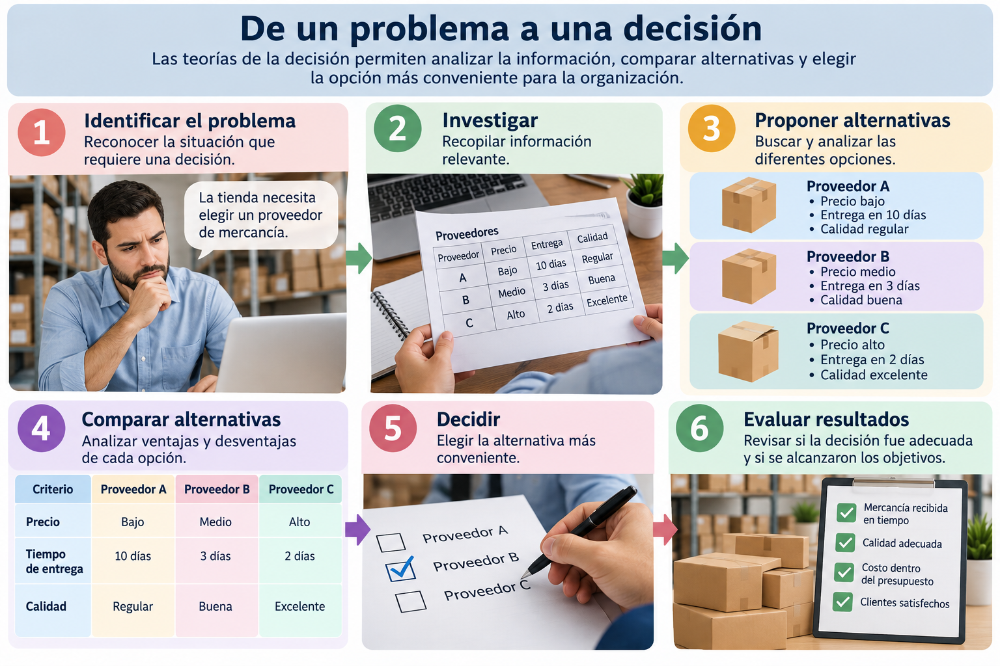
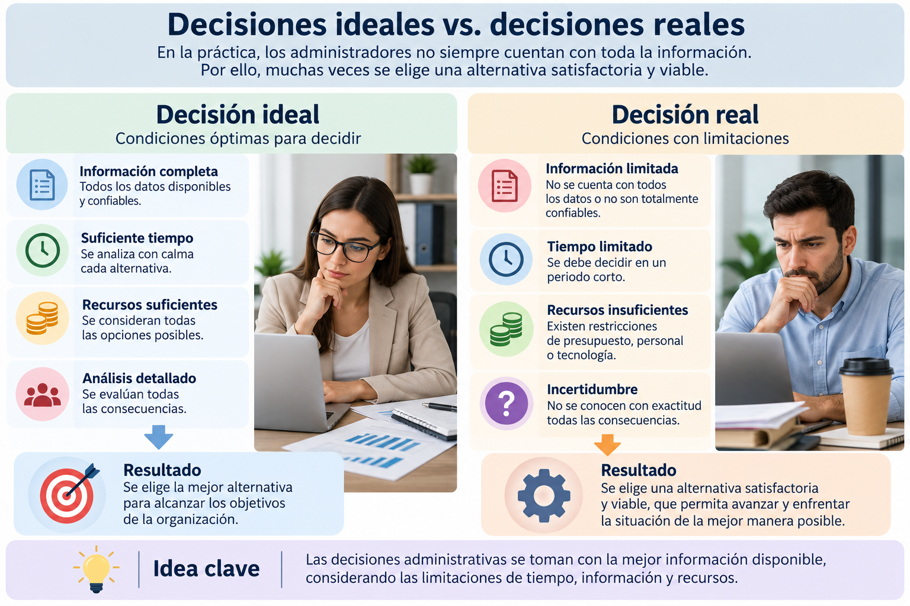
3.3. Teorías del desarrollo organizacional
3.3. Teorías del desarrollo organizacional
¿Qué es el desarrollo organizacional?
El Desarrollo Organizacional (DO) es un enfoque administrativo que busca mejorar el funcionamiento de las organizaciones mediante cambios planeados.
Estos cambios pueden realizarse en la manera de trabajar, la comunicación, las relaciones entre los empleados, los procesos y la cultura organizacional.
Su propósito es que la empresa pueda adaptarse a nuevas necesidades, resolver problemas y mejorar sus resultados, considerando tanto a las personas como a la organización.
Principales representantes
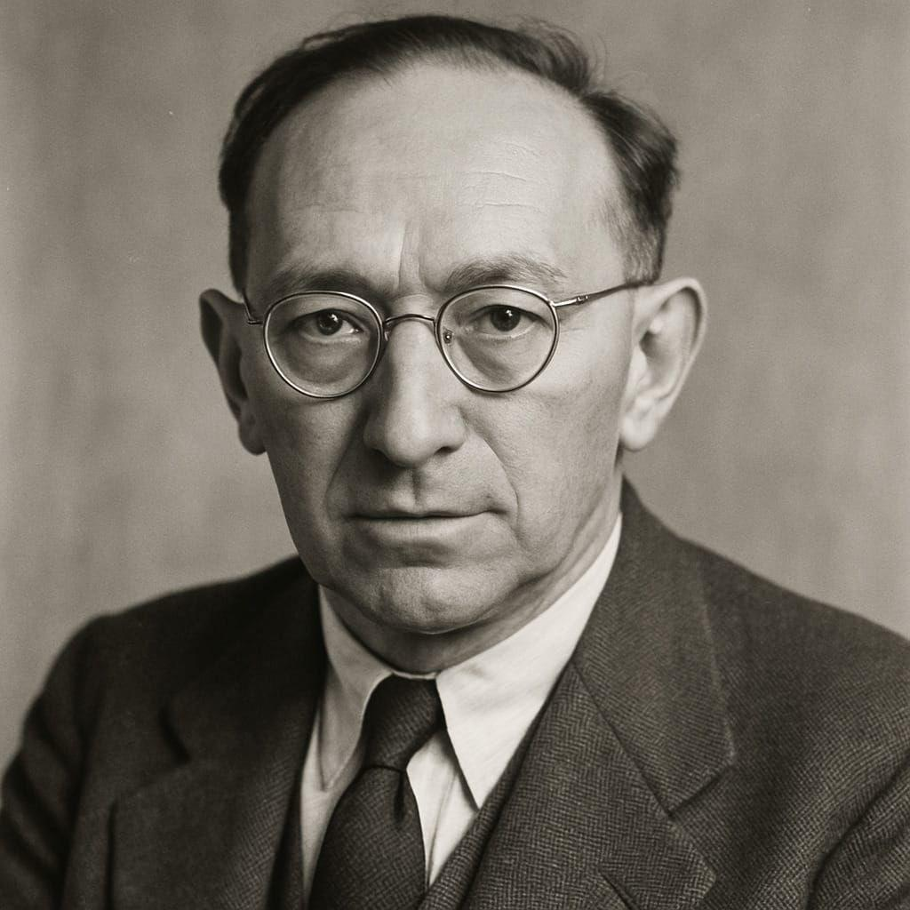
Kurt Lewin (1890–1947)
Fue uno de los principales antecedentes del desarrollo organizacional. Estudió el comportamiento de los grupos y propuso un modelo de cambio en tres etapas: descongelar, cambiar y recongelar.
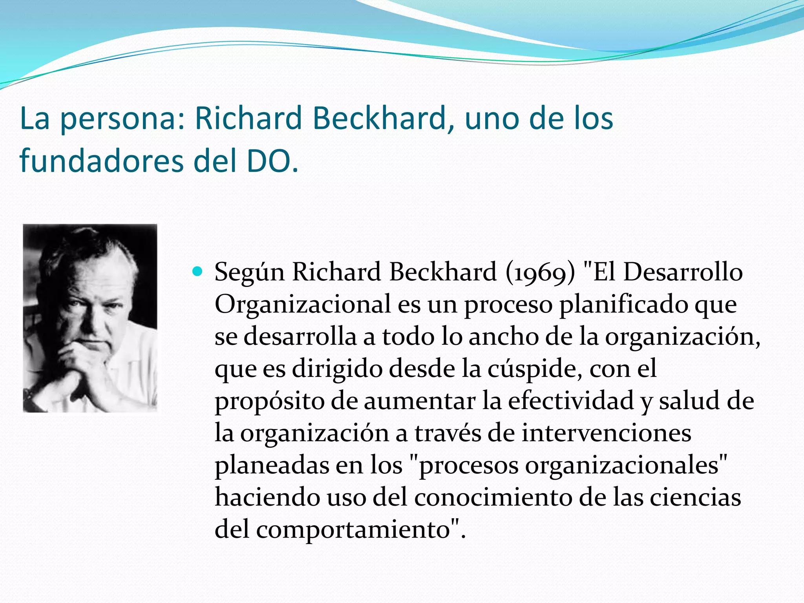
Richard Beckhard (1918–1999)
Fue uno de los impulsores del desarrollo organizacional como un proceso de cambio planeado para mejorar la efectividad de las organizaciones.
Características principales
- Cambio planeado: las modificaciones se realizan con un propósito definido.
- Participación del personal: los trabajadores forman parte del proceso de mejora.
- Comunicación: se informa y explica por qué son necesarios los cambios.
- Trabajo en equipo: se promueve la colaboración entre las diferentes áreas.
- Mejora organizacional: se busca fortalecer el funcionamiento de la empresa.
¿Cómo se desarrolla un cambio organizacional?
- Identificar ( Detectar el problema )
- Diagnosticar ( Analizar las causas )
- Planear ( Proponer cambios )
- Implementar ( Aplicar mejoras )
- Evaluar ( Revisar resultados )
La resistencia al cambio
No todas las personas aceptan inmediatamente las modificaciones en su trabajo.
Algunos empleados pueden sentir incertidumbre, temor a cometer errores o preocupación por aprender nuevas actividades.
Por ello, el administrador debe facilitar el proceso mediante:
- Comunicación clara.
- Capacitación.
- Participación de los trabajadores.
- Acompañamiento durante la adaptación.
La resistencia al cambio no siempre significa falta de compromiso; también puede reflejar dudas o necesidades de apoyo.
Ejemplo:
Una empresa registra sus inventarios manualmente y decide implementar un sistema digital.
Al principio, algunos trabajadores tienen dificultades porque desconocen el funcionamiento del programa.
Para facilitar el cambio, la administración organiza capacitaciones, explica los beneficios del nuevo sistema y permite que los empleados practiquen antes de utilizarlo de manera definitiva.
Como resultado, la empresa puede reducir errores, consultar información con mayor rapidez y mejorar el control de sus productos.
El desarrollo organizacional busca mejorar el funcionamiento de una empresa mediante cambios planeados, considerando la participación y adaptación de las personas.
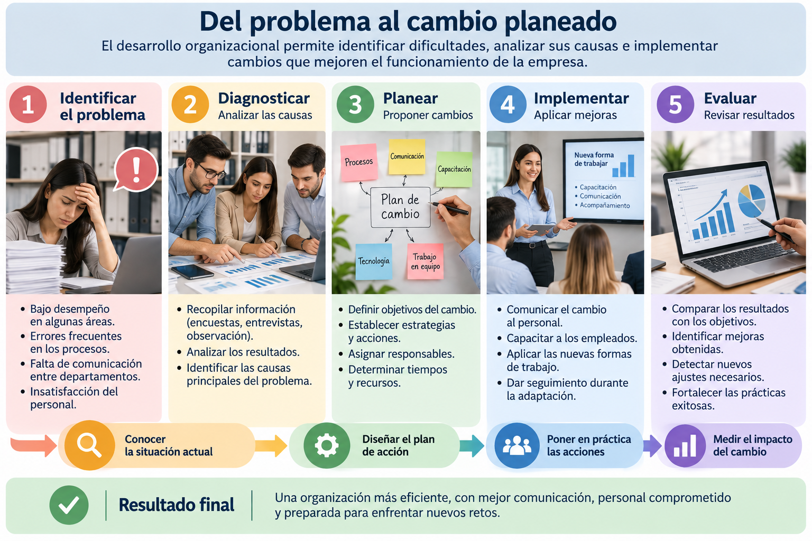
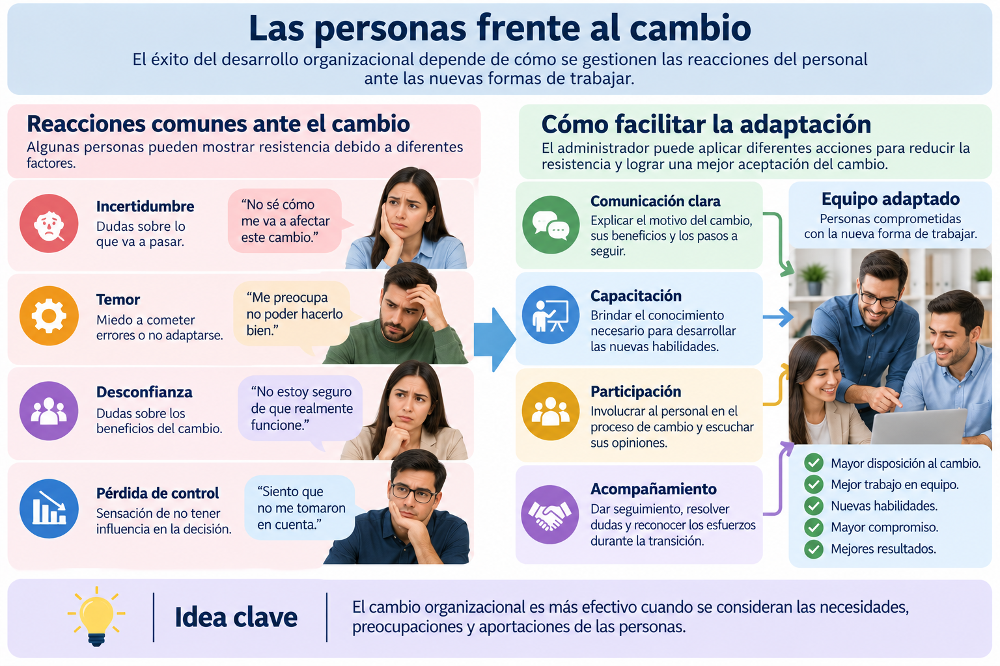
3.4. Teoría de la contingencia
3.4. Teoría de la contingencia
¿Qué es la teoría de la contingencia?
La teoría de la contingencia establece que no existe una única forma de administrar que funcione correctamente en todas las organizaciones.
Cada empresa enfrenta situaciones diferentes, por lo que las decisiones administrativas deben adaptarse a sus necesidades, características y circunstancias.
Su principio fundamental es:
La mejor manera de administrar depende de la situación.
Por ejemplo, una pequeña empresa familiar no necesita necesariamente la misma estructura, procedimientos o controles que una empresa industrial con cientos de trabajadores.
Principales representantes
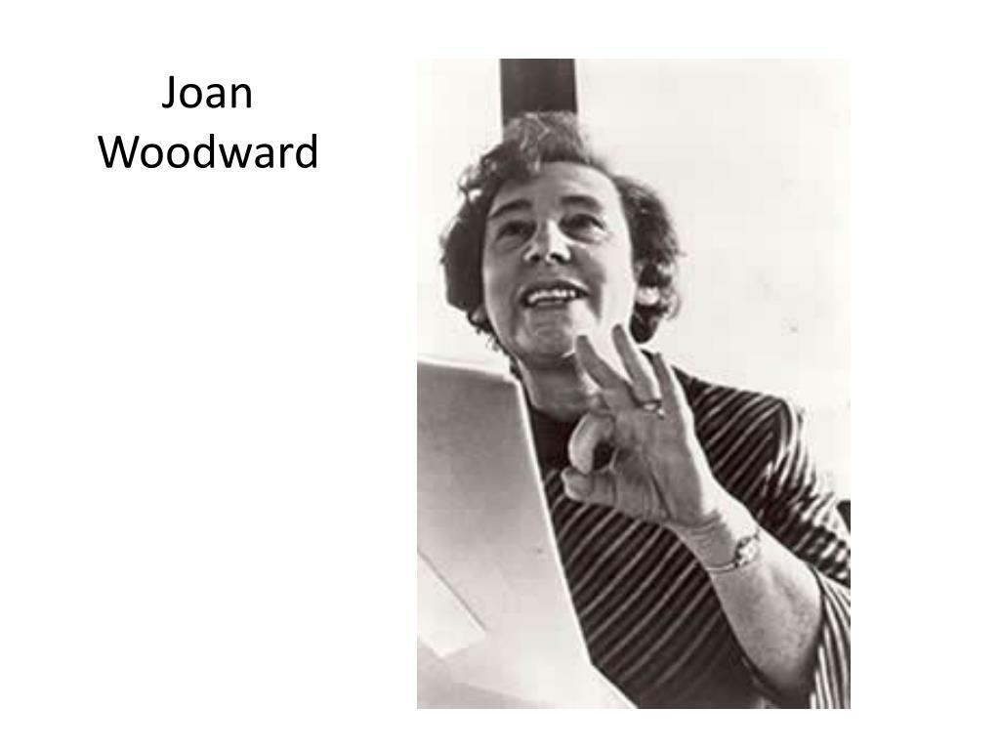
Joan Woodward (1916–1971)
Estudió la relación entre la tecnología de producción y la estructura organizacional. Sus investigaciones contribuyeron al desarrollo del enfoque de contingencia.
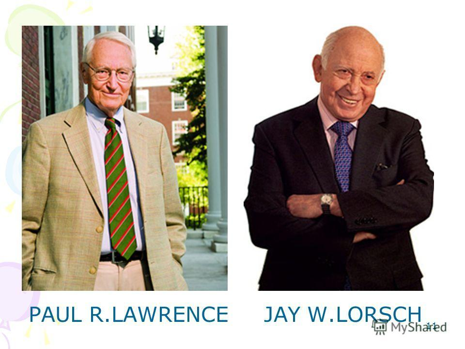
Paul R. Lawrence (1922–2011)
Junto con Jay W. Lorsch, estudió cómo las organizaciones deben adaptar sus estructuras y mecanismos de coordinación a las condiciones de su entorno.
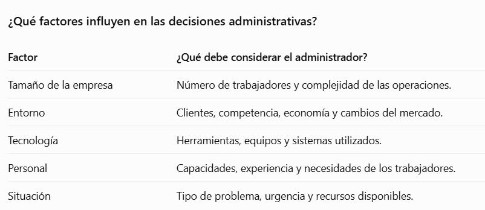
Características principales
- Flexibilidad: las decisiones pueden modificarse según las circunstancias.
- Adaptación: la organización responde a los cambios de su entorno.
- Análisis: se estudia cada situación antes de actuar.
- Diferentes soluciones: un mismo problema puede requerir respuestas distintas según el contexto.
Ejemplo:
Dos empresas presentan una disminución en sus ventas.
Aunque ambas empresas enfrentan una disminución en sus ventas, las causas son diferentes y requieren soluciones distintas.
La teoría de la contingencia permite comprender por qué el administrador debe analizar primero las circunstancias antes de elegir una estrategia.
Diferencia con otros enfoques
Mientras algunas teorías administrativas proponen principios o métodos generales, la teoría de la contingencia destaca que su aplicación debe ajustarse a las condiciones particulares de cada organización.
Esto no significa administrar sin reglas, sino elegir las prácticas más adecuadas para cada situación.
No existe una solución administrativa universal. Una buena decisión depende del análisis de las circunstancias y necesidades de cada organización.
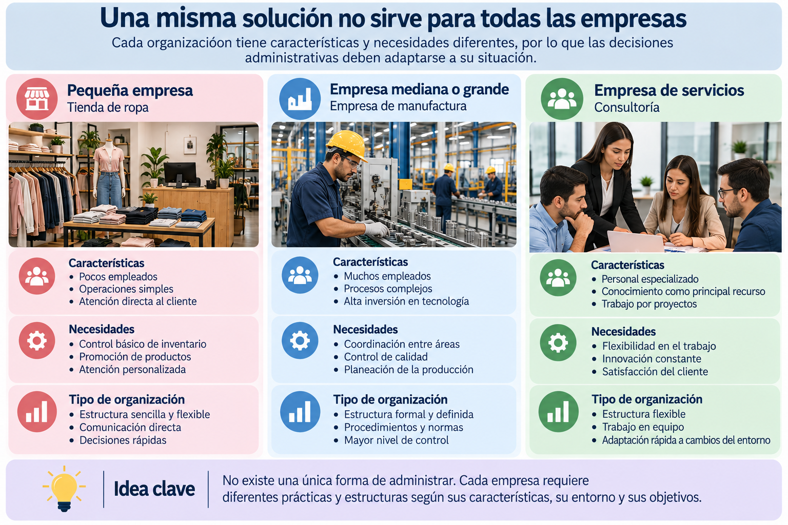
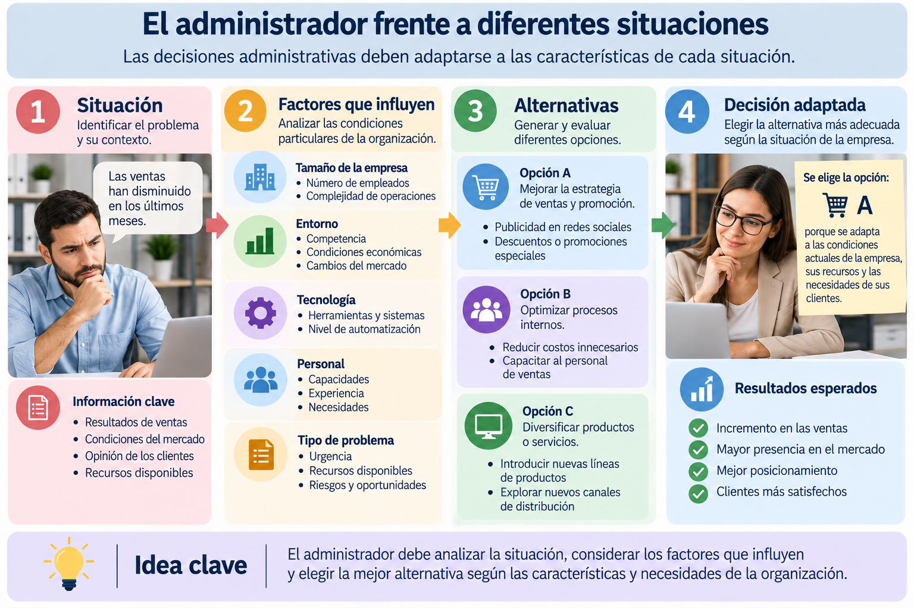
3.5. Método Deming
3.5. Método Deming
¿Qué es el Método Deming?
El Método Deming es un enfoque administrativo orientado a mejorar continuamente la calidad de los productos, servicios y procesos de una organización.
Su propósito es identificar problemas, realizar mejoras, evaluar los resultados y establecer nuevas acciones para lograr un funcionamiento más eficiente.
Este método se relaciona con el ciclo PHVA: Planear, Hacer, Verificar y Actuar.
La idea principal es que siempre existen oportunidades para mejorar la manera en que se realiza el trabajo.
Principal representante
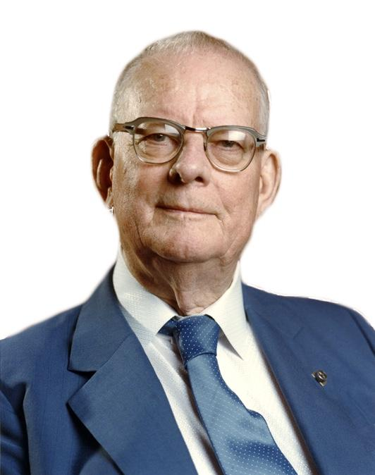
W. Edwards Deming (1900–1993)
Fue un estadístico y especialista en calidad que realizó importantes aportaciones a la administración y a la mejora de los procesos.
Promovió el uso de información, la participación de la dirección y el mejoramiento continuo para elevar la calidad y reducir errores.
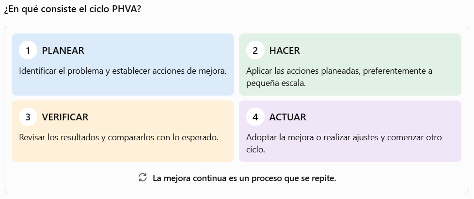
Características principales- Mejora continua: buscar constantemente mejores resultados.
- Prevención de errores: identificar las causas de los problemas.
- Calidad: satisfacer las necesidades del cliente.
- Participación: involucrar al personal en las mejoras.
- Evaluación: utilizar información para comprobar si las acciones funcionan.
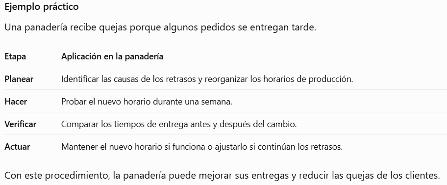
¿Por qué es importante para el administrador?
El Método Deming ayuda a que las decisiones de mejora no se basen únicamente en suposiciones.
Permite identificar problemas, probar soluciones y comprobar sus resultados antes de establecer cambios permanentes.
También ayuda a comprender que la calidad es responsabilidad de toda la organización y no solamente de quienes revisan el producto final.
La mejora continua consiste en revisar cómo se trabaja, identificar oportunidades de mejora, aplicar cambios y evaluar sus resultados de manera constante.
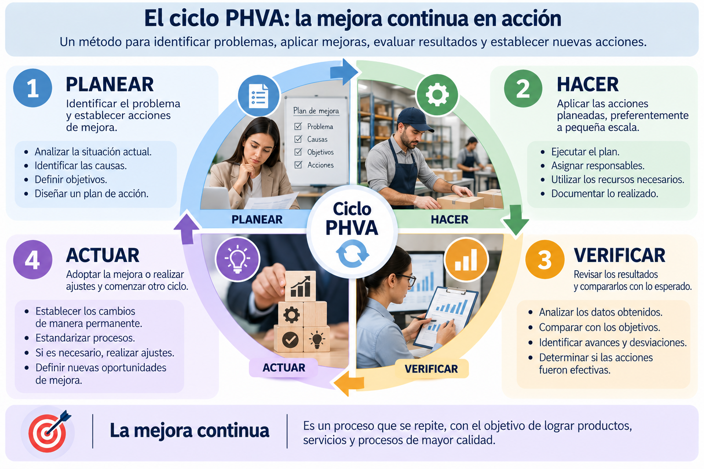
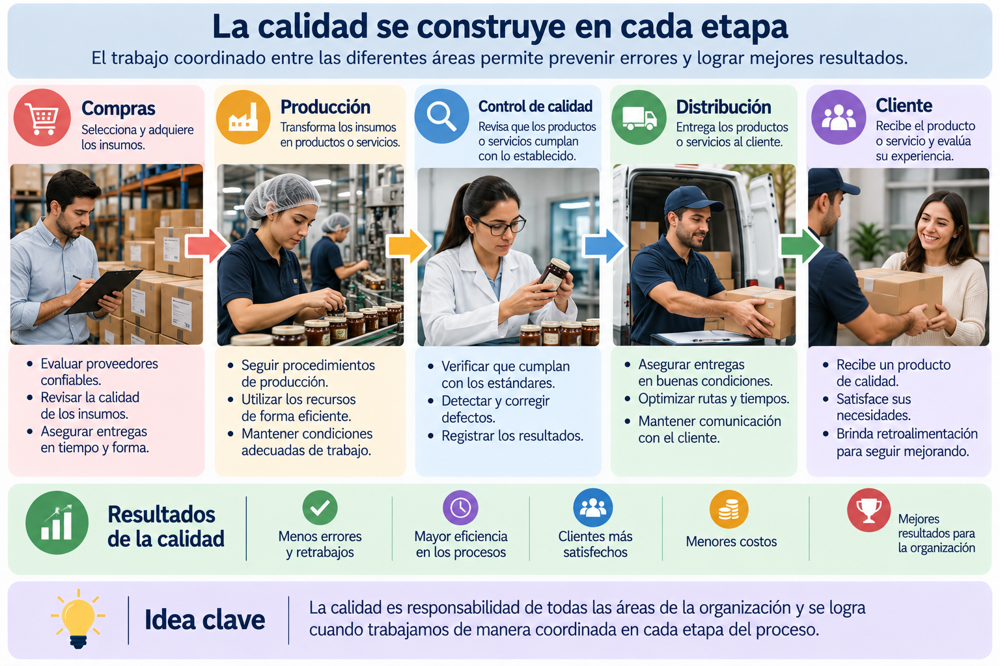
3.6. Teoría organizacional
3.6. Teoría organizacional
¿Qué es la teoría organizacional?
La teoría organizacional estudia cómo se forman, estructuran y funcionan las organizaciones, así como la manera en que las personas, los departamentos y los procesos se relacionan para alcanzar objetivos comunes.
Su propósito es comprender por qué las organizaciones funcionan de determinada manera y cómo pueden mejorar su desempeño.
Esta teoría permite analizar tanto la estructura de una empresa como el comportamiento de las personas y su relación con el entorno.
Principales aportaciones
La teoría organizacional reúne aportaciones de diferentes investigadores. Entre los más importantes se encuentran:
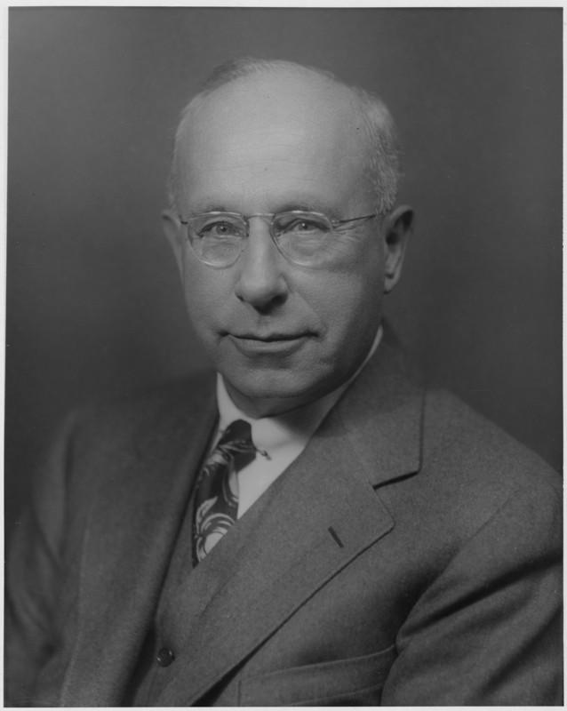
Chester Barnard (1886–1961)
Destacó la importancia de la cooperación, la comunicación y los objetivos comunes para el funcionamiento de las organizaciones.
Herbert A. Simon (1916–2001)
Analizó la toma de decisiones dentro de las organizaciones y cómo estas influyen en su funcionamiento.
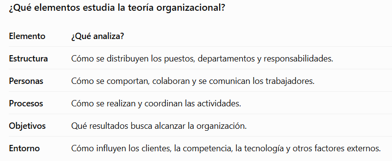
¿Por qué es importante?
La teoría organizacional ayuda al administrador a:
- Comprender cómo funciona una empresa en su conjunto.
- Identificar problemas de coordinación y comunicación.
- Analizar las responsabilidades de cada departamento.
- Reconocer cómo influyen las personas en los resultados.
- Proponer mejoras en la estructura y los procesos.
Ejemplo:
Una empresa comercial tiene tres departamentos: Ventas, Almacén y Administración.
Los vendedores ofrecen productos sin consultar previamente las existencias del almacén. Como consecuencia, algunos clientes realizan compras de productos que no están disponibles.
La administración detecta que el problema no se encuentra únicamente en Ventas, sino en la falta de coordinación y comunicación entre los departamentos.
Para solucionarlo, establece un sistema compartido de inventarios y define responsabilidades para actualizar la información.
Con ello, los departamentos pueden trabajar de manera coordinada y mejorar la atención al cliente.
Diferencia entre teoría organizacional y administración
Aunque están relacionadas, tienen enfoques distintos.
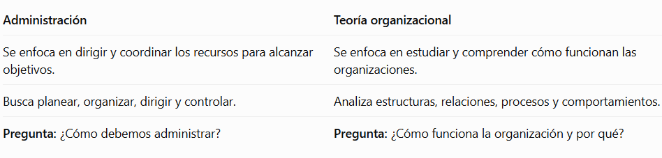
La teoría organizacional permite comprender cómo se relacionan las personas, las estructuras y los procesos para lograr el funcionamiento y los objetivos de una organización.
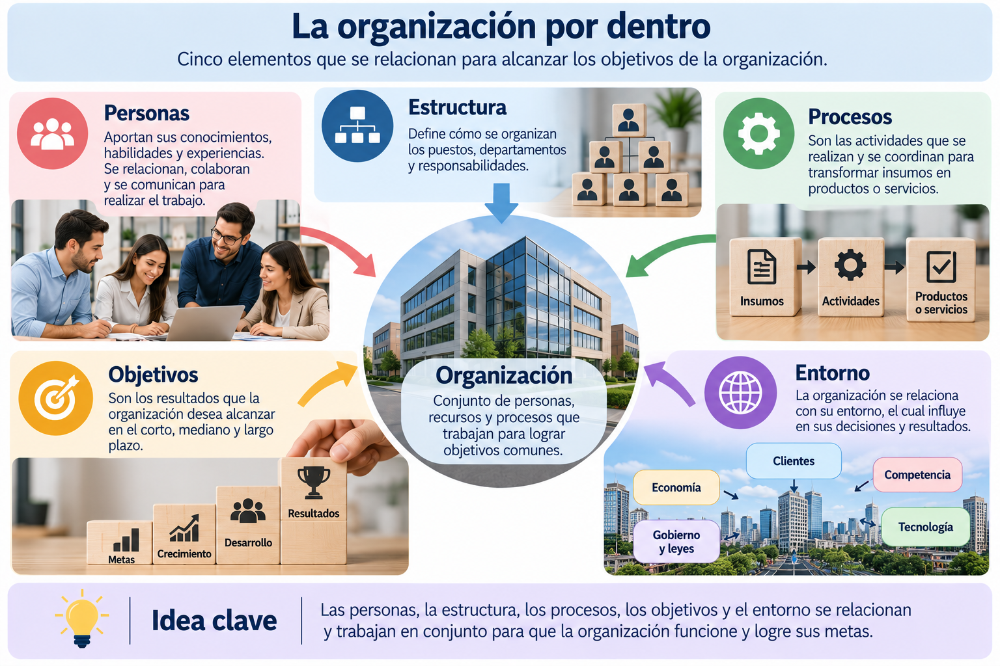
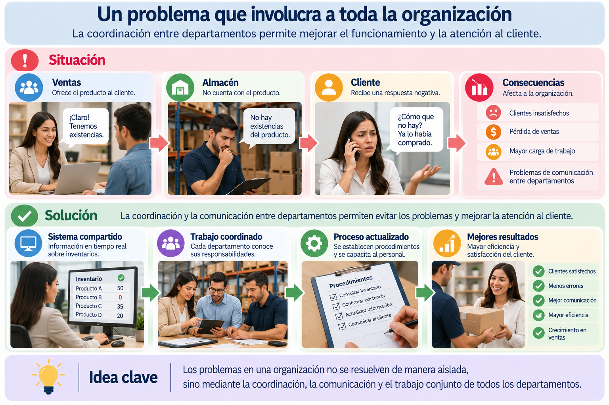